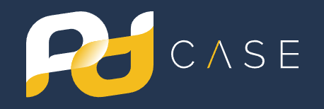
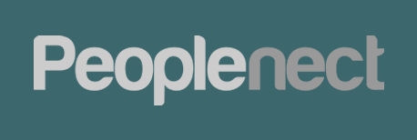

Experiência Profissional

PD Case Informática Ltda
Jan/2023 – Atual
Desenvolvedor PHP Pleno (Remoto)
- • Modernização de sistemas legados (PHP 5.x para 8.x) e mitigação de riscos OWASP.
- • Padronização de Dockerfiles e infraestrutura containerizada para builds reprodutíveis.

Peoplenect
Mar/2019 – Atual
Consultor Técnico / Dev PHP Pleno
- • Evolução de ATS com **Laravel + React** e migração para Bootstrap 5.
- • Implementação de camada de upload S3 e segurança de rotas MySQL.
HelpMaisCredito
Jan/2018 – Mar/2019
Desenvolvedor PHP Fullstack
- • Desenvolvimento completo de sistemas web internos com PHP e MySQL.
Neobpo (UOL)
Mar/2016 – Out/2018
Analista de Suporte / Web Developer
- • Manutenção de intranet e suporte técnico ao portal UOL (HTML/CSS/JS).